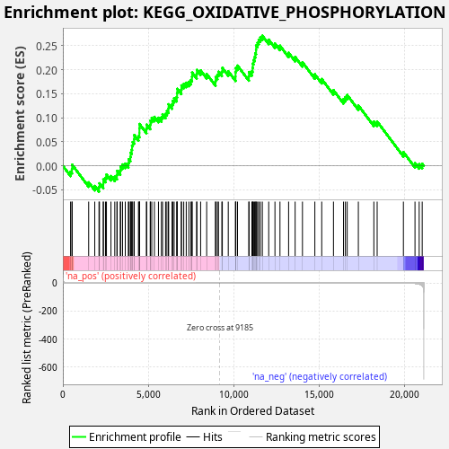
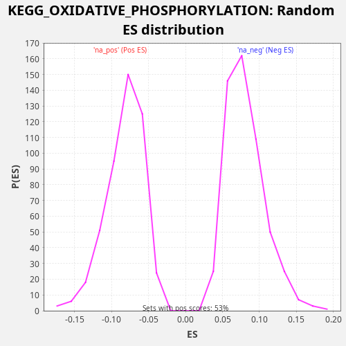

| Dataset | CCLE |
| Phenotype | NoPhenotypeAvailable |
| Upregulated in class | na_pos |
| GeneSet | KEGG_OXIDATIVE_PHOSPHORYLATION |
| Enrichment Score (ES) | 0.27106667 |
| Normalized Enrichment Score (NES) | 3.3401954 |
| Nominal p-value | 0.0 |
| FDR q-value | 0.0 |
| FWER p-Value | 0.0 |

| SYMBOL | RANK IN GENE LIST | RANK METRIC SCORE | RUNNING ES | CORE ENRICHMENT | |
|---|---|---|---|---|---|
| 1 | ATP6V0A4 | 451 | 0.141 | -0.0121 | Yes |
| 2 | NDUFC2 | 533 | 0.100 | -0.0066 | Yes |
| 3 | NDUFA3 | 543 | 0.097 | 0.0023 | Yes |
| 4 | SDHA | 1511 | 0.012 | -0.0344 | Yes |
| 5 | ATP6V0C | 1867 | 0.008 | -0.0419 | Yes |
| 6 | UQCR11 | 2114 | 0.006 | -0.0443 | Yes |
| 7 | ATP6V1H | 2144 | 0.006 | -0.0363 | Yes |
| 8 | NDUFB3 | 2366 | 0.005 | -0.0375 | Yes |
| 9 | ATP6V1A | 2369 | 0.005 | -0.0282 | Yes |
| 10 | COX10 | 2496 | 0.004 | -0.0249 | Yes |
| 11 | ATP6V1D | 2552 | 0.004 | -0.0181 | Yes |
| 12 | ATP6V1F | 2815 | 0.003 | -0.0213 | Yes |
| 13 | NDUFS3 | 3039 | 0.003 | -0.0225 | Yes |
| 14 | ATP6V0D1 | 3163 | 0.002 | -0.0190 | Yes |
| 15 | NDUFS6 | 3180 | 0.002 | -0.0105 | Yes |
| 16 | NDUFB2 | 3360 | 0.002 | -0.0096 | Yes |
| 17 | COX7A2L | 3381 | 0.002 | -0.0012 | Yes |
| 18 | NDUFV3 | 3493 | 0.002 | 0.0028 | Yes |
| 19 | TCIRG1 | 3653 | 0.002 | 0.0046 | Yes |
| 20 | COX7C | 3834 | 0.001 | 0.0054 | Yes |
| 21 | COX6A1 | 3856 | 0.001 | 0.0137 | Yes |
| 22 | NDUFV2 | 3952 | 0.001 | 0.0186 | Yes |
| 23 | COX8A | 3965 | 0.001 | 0.0273 | Yes |
| 24 | ATP6V1B1 | 4028 | 0.001 | 0.0337 | Yes |
| 25 | ATP6V0E1 | 4049 | 0.001 | 0.0421 | Yes |
| 26 | NDUFA2 | 4089 | 0.001 | 0.0496 | Yes |
| 27 | COX6B1 | 4172 | 0.001 | 0.0551 | Yes |
| 28 | UQCRQ | 4179 | 0.001 | 0.0641 | Yes |
| 29 | NDUFS7 | 4425 | 0.001 | 0.0618 | Yes |
| 30 | UQCRB | 4479 | 0.001 | 0.0686 | Yes |
| 31 | ATP6AP1 | 4480 | 0.001 | 0.0780 | Yes |
| 32 | NDUFA6 | 4485 | 0.001 | 0.0871 | Yes |
| 33 | NDUFB4 | 4890 | 0.001 | 0.0773 | Yes |
| 34 | ATP6V1G1 | 4906 | 0.001 | 0.0859 | Yes |
| 35 | NDUFA1 | 5112 | 0.001 | 0.0855 | Yes |
| 36 | SDHB | 5126 | 0.001 | 0.0942 | Yes |
| 37 | NDUFAB1 | 5203 | 0.000 | 0.0999 | Yes |
| 38 | NDUFB1 | 5358 | 0.000 | 0.1020 | Yes |
| 39 | NDUFB8 | 5595 | 0.000 | 0.1001 | Yes |
| 40 | UQCRC1 | 5771 | 0.000 | 0.1011 | Yes |
| 41 | COX7B2 | 5836 | 0.000 | 0.1074 | Yes |
| 42 | NDUFA11 | 6012 | 0.000 | 0.1084 | Yes |
| 43 | NDUFA10 | 6090 | 0.000 | 0.1141 | Yes |
| 44 | NDUFA9 | 6182 | 0.000 | 0.1191 | Yes |
| 45 | COX17 | 6187 | 0.000 | 0.1283 | Yes |
| 46 | MT-ND3 | 6391 | 0.000 | 0.1280 | Yes |
| 47 | NDUFB5 | 6433 | 0.000 | 0.1354 | Yes |
| 48 | SDHC | 6513 | 0.000 | 0.1409 | Yes |
| 49 | UQCRFS1 | 6663 | 0.000 | 0.1432 | Yes |
| 50 | NDUFS1 | 6686 | 0.000 | 0.1515 | Yes |
| 51 | NDUFB10 | 6697 | 0.000 | 0.1604 | Yes |
| 52 | ATP6V0E2 | 6932 | 0.000 | 0.1586 | Yes |
| 53 | PPA2 | 6941 | 0.000 | 0.1675 | Yes |
| 54 | NDUFB7 | 7075 | 0.000 | 0.1706 | Yes |
| 55 | NDUFA7 | 7221 | 0.000 | 0.1730 | Yes |
| 56 | NDUFA8 | 7376 | 0.000 | 0.1750 | Yes |
| 57 | UQCRC2 | 7496 | 0.000 | 0.1787 | Yes |
| 58 | ATP6V0A1 | 7558 | 0.000 | 0.1852 | Yes |
| 59 | COX11 | 7565 | 0.000 | 0.1942 | Yes |
| 60 | NDUFA4 | 7831 | 0.000 | 0.1910 | Yes |
| 61 | ATP6V1E1 | 7842 | 0.000 | 0.1998 | Yes |
| 62 | CYC1 | 8064 | 0.000 | 0.1987 | Yes |
| 63 | SDHD | 8417 | 0.000 | 0.1912 | Yes |
| 64 | NDUFB9 | 8934 | 0.000 | 0.1760 | Yes |
| 65 | NDUFS8 | 8944 | 0.000 | 0.1850 | Yes |
| 66 | ATP6V0A2 | 9045 | 0.000 | 0.1895 | Yes |
| 67 | UQCR10 | 9107 | 0.000 | 0.1960 | Yes |
| 68 | COX5A | 9305 | -0.000 | 0.1960 | Yes |
| 69 | NDUFC1 | 9333 | -0.000 | 0.2040 | Yes |
| 70 | COX5B | 9680 | -0.000 | 0.1969 | Yes |
| 71 | NDUFS2 | 10105 | -0.000 | 0.1861 | Yes |
| 72 | COX7A2 | 10107 | -0.000 | 0.1954 | Yes |
| 73 | ATP6V1B2 | 10124 | -0.000 | 0.2040 | Yes |
| 74 | COX4I1 | 10222 | -0.000 | 0.2087 | Yes |
| 75 | LHPP | 10885 | -0.000 | 0.1865 | Yes |
| 76 | NDUFS4 | 10896 | -0.000 | 0.1954 | Yes |
| 77 | MT-CYB | 11062 | -0.000 | 0.1969 | Yes |
| 78 | MT-ATP8 | 11107 | -0.000 | 0.2042 | Yes |
| 79 | UQCRHL | 11118 | -0.000 | 0.2130 | Yes |
| 80 | COX15 | 11161 | -0.000 | 0.2204 | Yes |
| 81 | ATP6V1C1 | 11225 | -0.000 | 0.2267 | Yes |
| 82 | NDUFA5 | 11261 | -0.000 | 0.2344 | Yes |
| 83 | UQCRH | 11308 | -0.000 | 0.2416 | Yes |
| 84 | MT-ND2 | 11312 | -0.000 | 0.2508 | Yes |
| 85 | PPA1 | 11394 | -0.000 | 0.2563 | Yes |
| 86 | NDUFS5 | 11464 | -0.000 | 0.2623 | Yes |
| 87 | NDUFB6 | 11557 | -0.000 | 0.2673 | Yes |
| 88 | ATP6V1E2 | 11675 | -0.000 | 0.2711 | Yes |
| 89 | COX7B | 12048 | -0.000 | 0.2627 | No |
| 90 | ATP6V0B | 12413 | -0.000 | 0.2547 | No |
| 91 | MT-ATP6 | 12707 | -0.000 | 0.2501 | No |
| 92 | COX6C | 13212 | -0.001 | 0.2355 | No |
| 93 | MT-CO2 | 13594 | -0.001 | 0.2267 | No |
| 94 | MT-CO3 | 14023 | -0.001 | 0.2157 | No |
| 95 | MT-ND1 | 14748 | -0.002 | 0.1906 | No |
| 96 | NDUFV1 | 15151 | -0.002 | 0.1808 | No |
| 97 | MT-ND4L | 15838 | -0.004 | 0.1575 | No |
| 98 | MT-ND6 | 16425 | -0.006 | 0.1390 | No |
| 99 | MT-ND4 | 16534 | -0.007 | 0.1432 | No |
| 100 | MT-ND5 | 16641 | -0.007 | 0.1475 | No |
| 101 | ATP6V1G2 | 17294 | -0.012 | 0.1258 | No |
| 102 | MT-CO1 | 18202 | -0.027 | 0.0920 | No |
| 103 | NDUFA4L2 | 18395 | -0.033 | 0.0922 | No |
| 104 | ATP6V1C2 | 19931 | -0.322 | 0.0285 | No |
| 105 | ATP12A | 20609 | -2.505 | 0.0057 | No |
| 106 | COX6B2 | 20854 | -7.101 | 0.0034 | No |
| 107 | ATP6V0D2 | 21031 | -18.797 | 0.0044 | No |

{kind=link}
{kind=link}